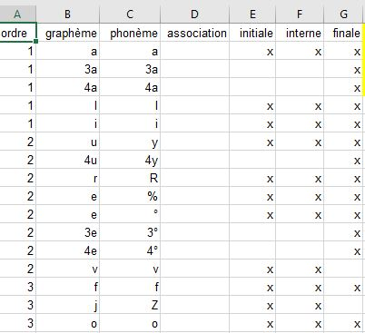

Progression pédagogique (page essai pour l'instant seulement sur associations G-Ph))
Les progressions pédagogiques peuvent être définies sur PC. Le principe
est simple: 1) on introduit la liste des associations G-Ph sur excel, 2)
on sauvegarde la feuille excel en format .txt avec tabulation, 3) on
double clic sur le 'progression.exe', 4) les résultats sont sauvegardés
dans une nouvelle feuille excel 'resultats4'
Comment procéder pour l'installation initiale (à faire que la première
fois):
• Il faut installer les ressources nécessaires pour faire tourner le
programme 'progression.exe'. Il s'agit des ressources standards 'Visual
Foxpro ver. 9' (remerciement à...à compléter). En pratique, télécharger
le fichier VFP9SP2RT.exe, ensuite double
clic dessus. Laissez les options par défaut, mais sélectionner
éventuellement une autre langue dans le menu.
• Télécharger le fichier dossier
progression a copier.rar. Ce dossier contient l'ensemble des
fichiers et programmes pour définir la progression pédagogique.
Décompresser le dossier (.rar).
Définir la progression pédagogique:
• Ouvrir le fichier excel 'liste_sequences.xlsx'. Un extrait de ce
fichier est illustré ci-contre. Ce fichier est actuellement rempli avec
des associations pour les tests du programme. Supprimez tout, en
conservant obligatoirement la première ligne 'ordre, gaphème, phonème,
association, initial,interne, finale'. Maintenant à vous d'introduire la
liste des graphèmes et des phonèmes associés. Ne remplissez par la
colonne 'association', laissez vide. Pour chaque association, spécifiez
si ces associations peuvent apparaitre en initiale, finale ou position
interne des mots. Dans ce cas, placez un 'x' dans la case, sinon laissez
vide. Les valeurs dans la colonne 'ordre' spécifie l'ordre de
l'apprentissage, les graphèmes-phonèmes possédant le même numéro d'ordre
sont considérés être enseignés lors d'une même séance. Commencer avec la
valeur 1.

• Sauvegardez votre fichier excel une fois terminé. Sauvegardez-le une
seconde fois mais maintenant au format .txt (delimited with tab). C'est
ce format de fichier qui sera utilisé
• Double cliquez sur le programme 'progression.exe'. Vous verrez
apparaître brièvement le défilement des numéros de leçon. Les résultats
de la recherche se trouvent dans le fichier 'results4.xls'. Il suffit
maintenant pour vous de le trier en fonction du numéro d'ordre (des
leçons).